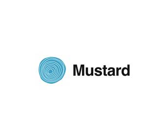
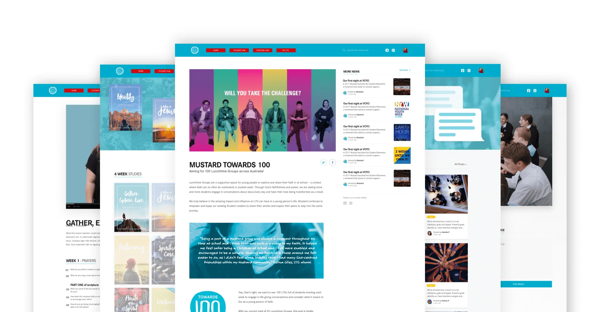
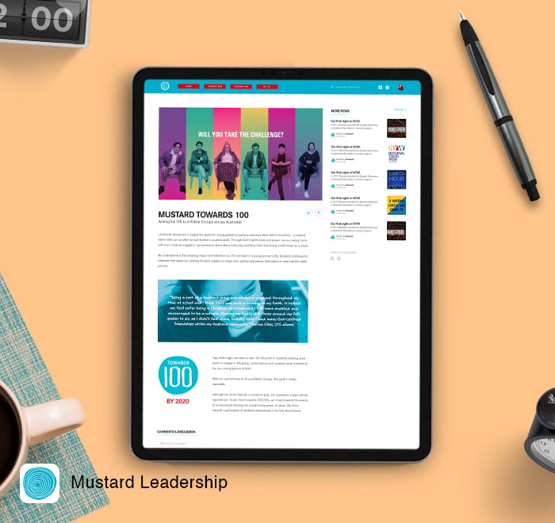

A web app for a Christian youth ministry that partners with schools to run events and support students.

Mustard is a Christian ministry that helps young people live a full life of faith. It partners with independent schools to run Mustard Live events, supports the spiritual formation of students, and organises training and regional gatherings for the Mustard Student Movement. The Mustard web app gives the ministry and its partner schools one place to manage these events and programs, so the team can spend less time on admin and more time with students.

